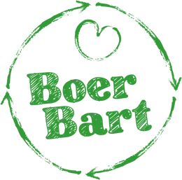

Boerderijwinkel
Zelfscan
Pak je boodschappen, tik op het product of fotografeer het etiket, en reken zelf af met je telefoon.

Boer BartZelfscan · boerderijwinkelProefversie · het aanbod is echt, betalen is nog een test (er gaat geen echt geld om)
Boerderijwinkel
Pak je boodschappen, tik op het product of fotografeer het etiket, en reken zelf af met je telefoon.